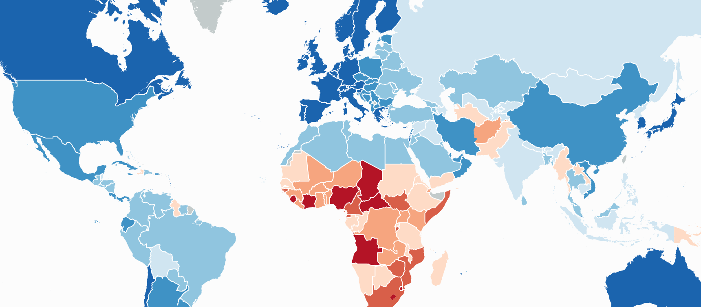

Hands-on Exercise 10b: Calibrating Spatial Interaction Models with R
21 min
Oct 22, 2024

This website showcases my coursework, featuring exercises and assignments enriched with geospatial visualizations and analytical insights. I invite you to explore the contents I’ve developed throughout the course.